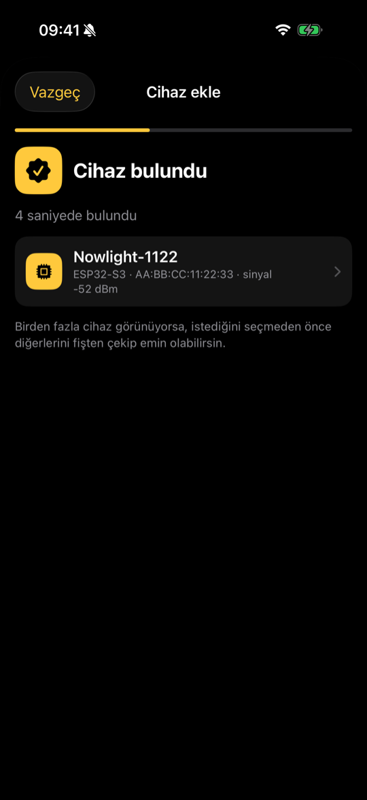
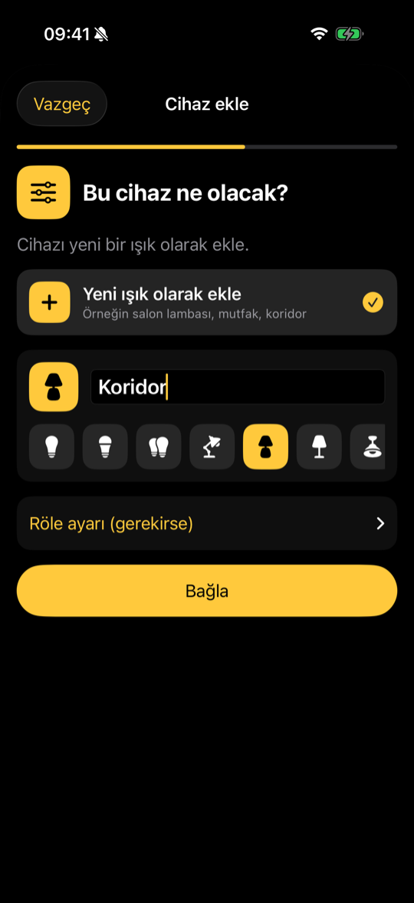

Nowlight kurulum rehberi
Boş bir ESP32'yi, telefondan açıp kapattığın bir ışığa çevir. Kod yazmana, program kurmana gerek yok. Toplam yaklaşık 10 dakika.
Neye ihtiyacın var?
- Bir köprü kartı: evde bir tane. Telefonun ışıklarla bu kart üzerinden konuşur.
- Her ışık için bir ESP32 kartı (S3, C3, C6, S2 ya da klasik ESP32) ve veri kablosu (yalnızca şarj kablosu çalışmaz).
- Her ışık için bir röle modülü ve lamba.
- Chrome ya da Edge yüklü bir bilgisayar (ya da Android telefon). Safari ve iPhone USB üzerinden yükleme yapamaz.
- iPhone'da Nowlight uygulaması.
Güvenlik: Rölenin lamba tarafı şebeke gerilimidir. Bağlantıyı elektrik bilen biriyle yap, sigortayı kapat. İlk denemeyi yalnızca düşük gerilimle (röle tıkını dinleyerek) yapmanı öneririm.
Bölüm 1: Köprüyü kur (evde bir kez)
Köprü yazılımını yükle
Yükleyici sayfasında Ne kuruyorsun? listesinden Köprü'yü, sonra kendi kartını seç. Kartı USB ile tak, Yükle'ye bas ve çıkan listeden kartının portunu seç. Yaklaşık bir dakika sürer.
WiFi'ni gir
Yükleme bitince sayfa WiFi ayarı sorar. Ağını seç, şifreni yaz. Şifre yalnızca köprünün hafızasına gider, başka hiçbir yere gönderilmez. Köprü bağlanınca kartı bir USB adaptörüne tak ve evde bir köşeye koy.
Uygulamaya bağla
Telefonda Nowlight → Cihaz Ekle → Köprü ayarları → Köprüyü otomatik bul'a bas. Adres ve anahtar kendiliğinden dolar, Kaydet de. Telefon köprüyle aynı WiFi'de olmalı.
Kurulum penceresi 10 dakika açık kalır. Kapanırsa köprüdeki BOOT tuşuna 2 saniye bas. Köprü, router'ın WiFi kanalını kendisi izler ve kendi rastgele ESP-NOW ağ anahtarını üretir.
Bölüm 2: Işık ekle (her yeni ışık için)
Kartı yükle
Yükleyici sayfasında bu sefer Işık düğümü'nü seç, kartını seç (çip adı kartın üzerinde yazar: ESP32-S3, C3, C6, S2). USB ile tak, Yükle'ye bas. Port görünmüyorsa kartın BOOT tuşuna basılı tutarak kabloyu tak, tuşu bırak ve tekrar dene.
Röleyi bağla
Rölenin sinyal ucunu (IN) kartın röle çıkışına, VCC'yi 5V'a, GND'yi GND'ye bağla. Çıkış pini yükleyici sayfasında kartının altında yazar:
| Kart | Röle çıkışı |
|---|---|
| ESP32-S3, C3, C6, S2 | GPIO5 |
| ESP32 klasik (DevKit, NodeMCU-32S) | GPIO23 |
Pin farklıysa uygulamadan değiştirebilirsin (Cihaz Ekle → cihaza dokun → Röle). Kartı bir USB adaptörüne tak.
Uygulamada eşleştir
Cihaz Ekle → Cihaz ekle → Cihaz ara'ya bas. Kartın birkaç saniye içinde Nowlight-XXXX adıyla çıkar. Üzerine dokun, Yeni ışık olarak ekle'yi seç, bir ad (örneğin Salon) ve simge seç, Bağla'ya bas. Aç ve kapat düğmelerini dene.



Widget ve Siri (isteğe bağlı)
Widget: ana ekranda boş bir yere uzun bas, + ile Nowlight'ı ekle. Widget'a uzun basıp Widget'ı Düzenle ile hangi ışıkların görüneceğini seç (en fazla 8).
Siri: Işıklar ekranının altındaki Siri'ye ekle kartından ışıkları seç. Her ışık için "aç" ve "kapat" cümlesi hazır gelir, her birini bir kez sesli söylersin. Sonra "Hey Siri, salon kapat" demen yeter, telefon kilitliyken de çalışır.
Cümleyi "ışık" kelimesiyle başlatma: Siri bunu kendi Ev uygulamasına yönlendirip "evinde ayarlanmış ışık yok" diyebilir. "Salon kapat" gibi sade adlar güvenli.


Sorun mu var?
| Sorun | Çözüm |
|---|---|
| Yükleyicide port görünmüyor | Veri kablosu kullan. Kartın BOOT tuşuna basılı tutarak kabloyu tak, tuşu bırak. Başka bir program (Arduino, PlatformIO) portu açıksa kapat. |
| Tarayıcı "desteklemiyor" diyor | Chrome ya da Edge kullan (bilgisayarda ya da Android'de). iPhone ve Safari olmaz. |
| Uygulama cihazı bulamıyor | Telefon köprüyle aynı WiFi'de mi? Cihaz yeni güç aldıysa birkaç saniye bekle. Başka bir köprüye bağlıysa BOOT tuşuna 5 saniye basarak eşleşmeyi sil. |
| Köprüyü otomatik bulamıyor | Köprüdeki BOOT tuşuna 2 saniye bas (10 dakikalık kurulum penceresini yeniden açar) ve tekrar dene. |
| Işık ters çalışıyor | Cihaz Ekle → cihaza dokun → Röle bölümünde Ters mantık'ı değiştir. |
| Siri "evinde ışık yok" diyor | Komutu "ışık" kelimesiyle başlatma, "Siri'ye ekle" ile kendi cümleni ekle. |
Yazılım açık kaynaktır: GitHub. Ayrıntılı belgeler ve devre bilgisi depoda.